Dirección de arte y estrategia de marca
1980–2000
La dirección de arte dejó de estar vinculada exclusivamente a las revistas para convertirse en una herramienta estratégica al servicio de la construcción de marca.
Puntos clave
- Las marcas comenzaron a construir identidades visuales consistentes y reconocibles a largo plazo.
- La comunicación dejó de centrarse únicamente en las colecciones para centrarse también en la construcción de universos de marca.
- Las supermodelos se convirtieron en activos de comunicación capaces de aportar valor simbólico a las campañas.
- Los fotógrafos desarrollaron estilos visuales propios que pasaron a formar parte de la identidad de las marcas.
- La coherencia visual comenzó a aplicarse de forma integrada en campañas, editoriales, desfiles y otros puntos de contacto con el consumidor.
Referentes
- Peter Lindbergh, Herb Ritts, Ellen von Unwerth y otros fotógrafos: figuras clave en la consolidación de una fotografía de moda con identidad propia.
- Grace Coddington: directora creativa de Vogue y una de las grandes impulsoras del estilismo como herramienta narrativa.
Galería
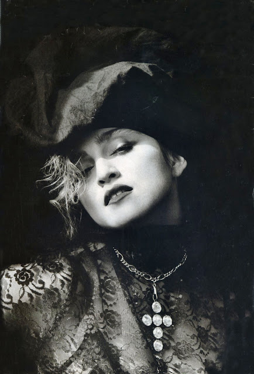
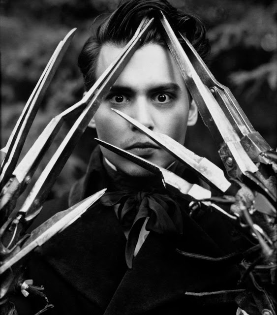

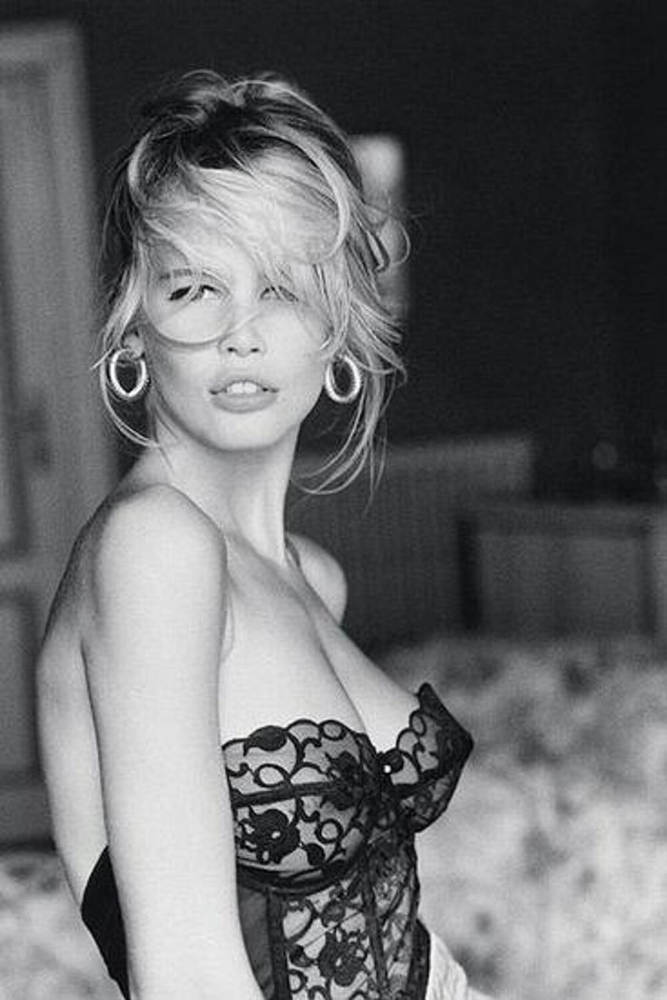
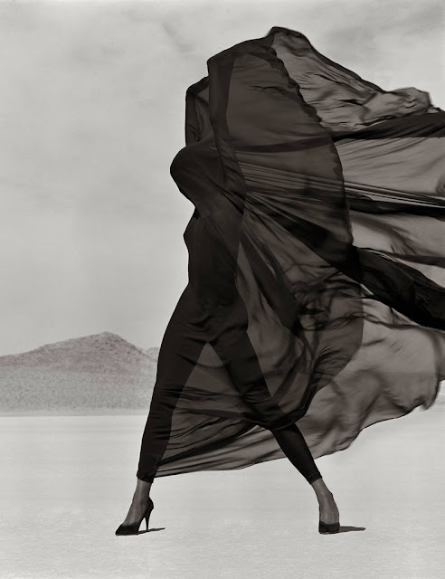
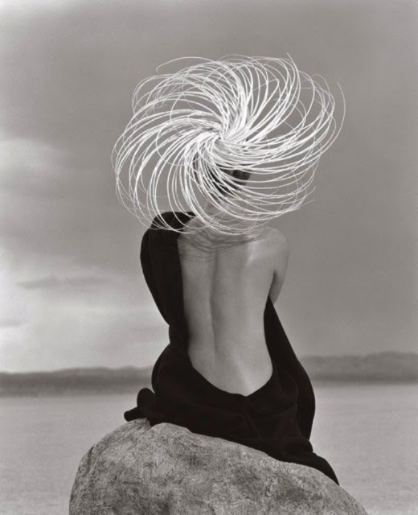
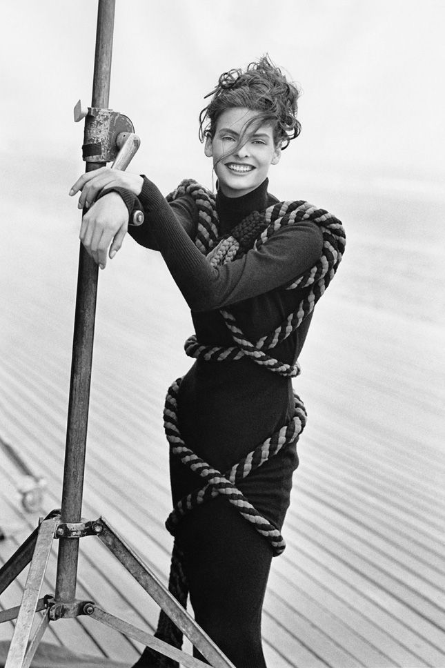
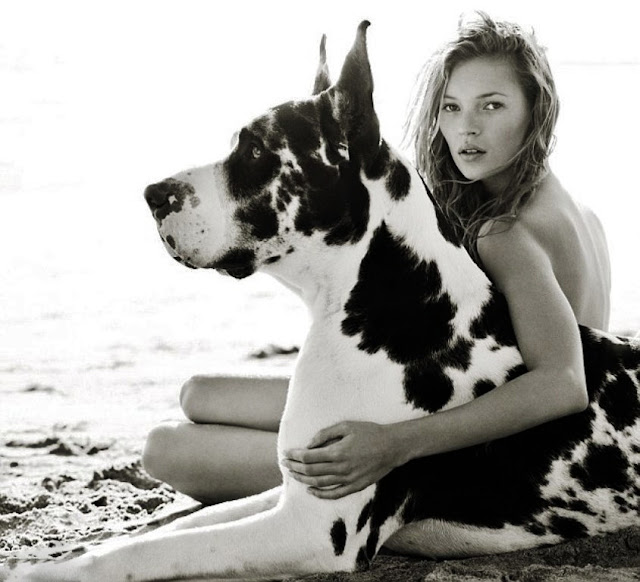
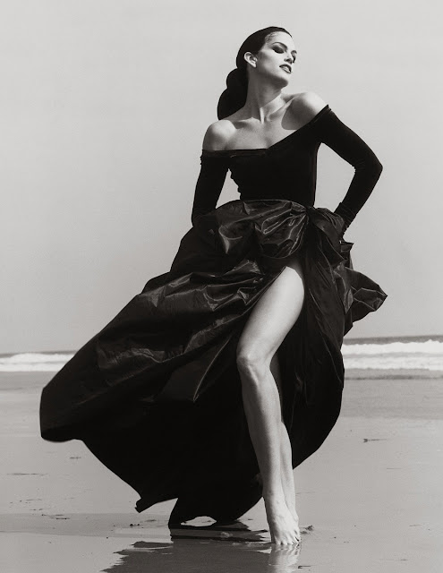
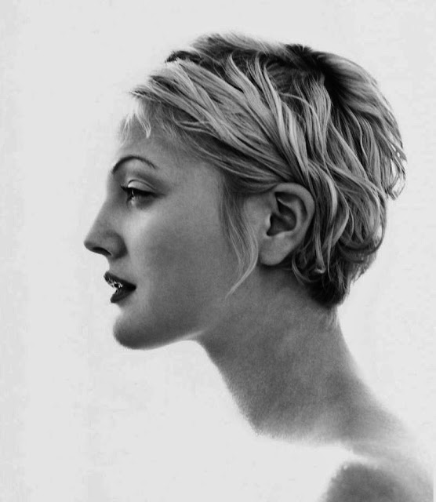
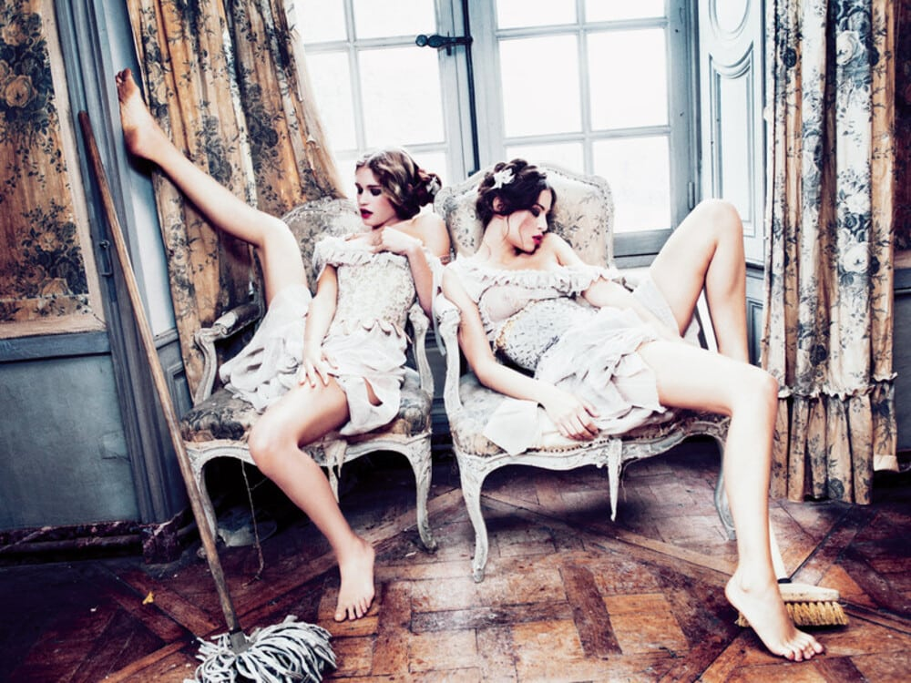
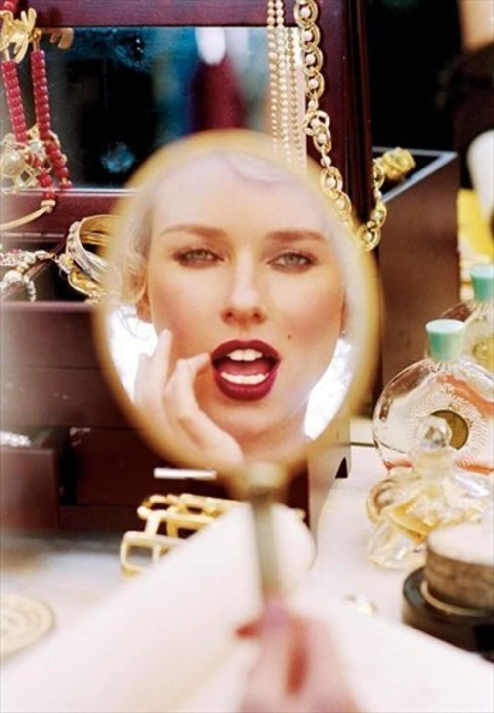